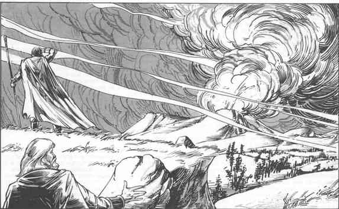

火山 · Volcanoes

火山喷发也许是荒野中最具视觉冲击、当然也是最危险的自然危害之一。火山可能休眠久到几乎被遗忘，即使幸存者代代相传的地方传说也只留下上一次喷发；然后在几天甚至几小时内“苏醒”，无情地释放积蓄已久的全部力量。另一些火山几乎一直活跃，每隔几周喷出一点灰和烟，不足以严重影响环境或附近居民，却足以提醒所有看得见它的人：它有一天可能不只是呼呼冒气。
为游戏目的，本节描述三种火山喷发。任何一座火山始终只会以三种类型之一喷发：它不会这次喷熔岩、下次又喷火山灰。每种喷发产生的东西不同，对附近一切事物的影响也不同。